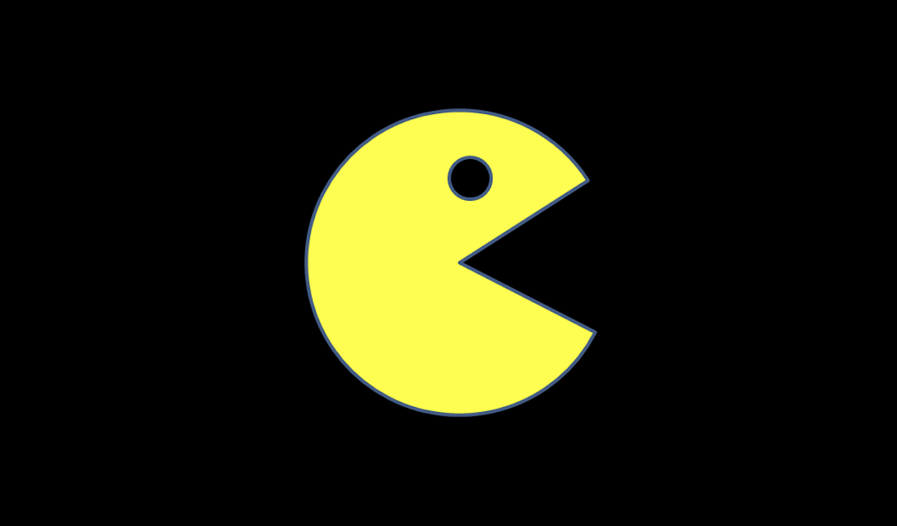
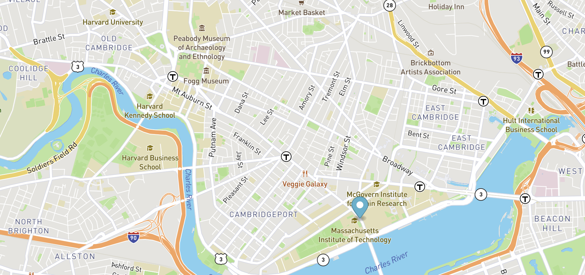

Projects
You can find the three main projects that were done during MITx Certificate Program

This PacMan exercise creates a pacman on button click and moves them at random velocities across the screen.

Using the mouse events, the two eye elements following the mouse position on the screen.

Uses MBTA bus data to locate bus stops between MIT and Harvard, then highlights the bus stops on the route with animation.